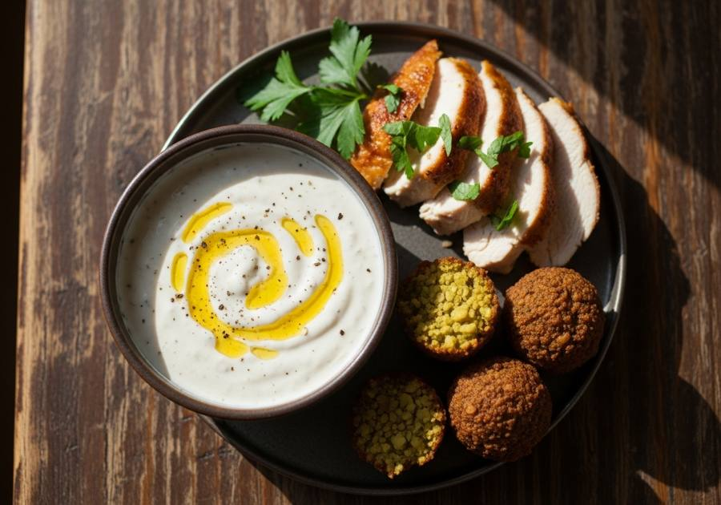

← Alle recepten

🍽 360 ml
⏱ Voorbereiding: 5 min
🔥 Bereiding: 0 min
Σ Totaal: 5 min
Ingrediënten
240 ml mayonaise (bij voorkeur gemaakt van alleen eidooiers)
60 ml water
2 el vers citroensap
0.25 tl gemalen karwijzaad
0.25 tl gemalen sumak
0.25 tl gemalen kardemom
snufje gemalen kurkuma
snufje xanthaangom
versgemalen zwarte peper naar smaak
Bereiding
Klop de mayonaise, het water en het citroensap glad tot er geen klontjes meer zijn. Voeg het karwijzaad, de sumak, de kardemom en de kurkuma toe en roer tot alles gecombineerd is. Voeg de xanthaangom toe en meng tot de saus licht indikt. Breng op smaak met versgemalen zwarte peper. Bewaar in de koelkast en gebruik royaal.
Bron: Thrillist - https://www.thrillist.com/recipe/new-york/halal-white-sauce-thrillist-recipes
Importeer in Pestle: deel deze URL naar de app.